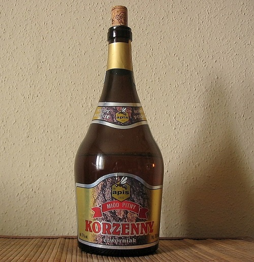

Na této stránce si můžete přečíst o všemožných druzích alkoholu, o jejich specifikacích a doporučeních k jejich pití a možným kombinacím s jinými nealkoholickými nápoji.
Pivo je jedním z nejoblíbenějších nápojů nás Čechů, stalo se vlastně takovým naším symbolem. V roce 2019 dokonce bylo zjištěno, že se u nás vypije ročně 188,6 litrů piva na osobu. S tím si držíme prvenství na celém světě!
| Důležité ingredience: | obilný slad, voda, chmel, pivovarské kvasinky |
| Vznik: | Mezopotámie – 7. tisíciletí př. n. l. |
| Procentuální obsah alkoholu: | 2% – 7 % (zpravidla) |
Druhy piva:
Víno je alkoholický nápoj, který se získává kvašením čerstvých hroznů (případně hroznového moštu). U nás v Evropské unii se smí víno vyrábět pouze z hroznů vinné révy. U vína je dáno, že obsah alkoholu musí přesahovat 8,5 %, povětšinou je to tedy více než u klasického piva.
Víno se může dělit buď podle základního dělení, dle barvy, dle zbytkového cukru, anebo dle jakosti.
Tato vína je možné dělit nadále na poddruhy tichá a šumivá vína, my si zde uvedeme příklad vína tichého, protože patří ke známějším.
Lihoviny jsou již zpravidla silnější alkoholické nápoje, jejich procentuální obsah alkoholu je v rozmezí mezi 15 % – 79,5 %, nespadá sem pivo ani víno.
Lihoviny se dělí podle způsobu zpracování a podle obsahu cukru
Povětšinou se lihoviny vyrábí ze tří základní surovin, buď škrobnatých surovin (brambory nebo obilí), cukernatých surovin (melasa, řepka, cukernaté plody) anebo z lihových tekutin (pivo, víno)
Nebudeme si zde na webu přesně popisovat, jak probíhá výroba takového lihu, dá se o tom ale velmi pěkně počíst třeba na této stránce.
Zástupců lihovin existuje samozřejmě mnohem více, vypsal jsem zde ale ty nejznámější, abyste měli alespoň lehký přehled, co přesně do této skupiny spadá.
Spousta lidí si myslí, že se tequila pije tak, že k ní zakusujete citron a jíte sůl, anebo dokonce pomeranč a skořici. Dejte si pozor, jedná se pouze o marketingový tah, takto se tequila nikdy nepije! Sloužilo to pouze proto, aby se tím zamaskovala chuť levných tequil.
K pití tequily není potřeba žádná show, nejlepší je totiž si zakoupit opravdovou a chutnou tequilu, kterou pijete nechlazenou a bez ledu, a určitě ne „na ex“ – tequila se usrkává a občas zapijí vodou.
Aby se whiskey mohla nazývat Tennessee, je k tomu zapotřebí splnit následující pravidla:
Koňak je vlastně specifickým druhem brandy, které patří mezi destiláty. Pro její specifikum jsem se ji však rozhodl zařadit zvlášť.
Aby se destilát mohl nazývat koňak, musí splňovat tyto příšné podmínky:
Medovina je velmi oblíbená pro svou sladkou chuť a také proto, že neobsahuje vysoké množství alkoholu. Vyrábí se z medu a vody (případně ovocné šťávy).
Medovina nemá daná přesně pravidla, dle kterých byste mohli určit její kvalitu. Pokud se ale po jejím nalití do sklenice („panáku“) neusadí kal, jež medovina mnohdy má, je s největší pravděpodobností nekvalitní.
Burčák je z části zkvašený mošt z plodů vinné révy. Důležité u burčáku je, aby byl poměr alkoholu, cukru a kyseliny v takové souhře, že si zamilujeme jeho chuť.
Jedná se opět o slabší alkohol s procentuálním obsahem mezi 1–7 %. Bývá k dispozici několik dní po začátku kvašení moštu, protože se jedná o meziprodukt při výrobě vína.
Je důležité si uvědomit, že slovem burčák může být označen pouze nápoj vyroben v daném roce od 1. 8. do 30. 11.
Jedná se o sladký alkoholický nápoj, jež se mnohdy dochucuje třeba ovocem, smetanou či bylinkami. Likéry se vyrábějí již dlouhá staletí, původně patřily dokonce do bylinkářské medicíny.
Název „likér“ pcohází z latinského slova liquifacere, které znamená „rozpustit se“.
Rozhodl jsem se, že uvedu jen jeden příklad likéru, který je velmi oblíbený. Konkrétně se jedná se o Tatratea, neboli tatranský čaj. Dalším známým likérem je třeba ještě malibu, griotka nebo „zelená“.
Tatranský čaj se vyrábí na základě receptů z hor z bylinek a čaje (původní recept vymysleli lidé ve Vysokých Tatrách), které mu dodávají tak jemnou a výbornou chuť. Je oblíbený jak pro čisté pití, tak pro míchání.
Extrakt z čaje a bylinek zraje v dubových sudech celkem osm týdnů. Tatratea nabízí dohromady 14 příchutí, které se liší i svým procentuálním obsahem alkoholu.
Příchuť a láhev můžeme poznat podle barvy láhve, které jsou vždy specifické.

Podržte myš na barvě láhve (malý čtvereček) pro zobrazení vizuálu.

Podržte myš na barvě láhve (malý čtvereček) pro zobrazení vizuálu.
Podržte myš na barvě láhve (malý čtvereček) pro zobrazení vizuálu.